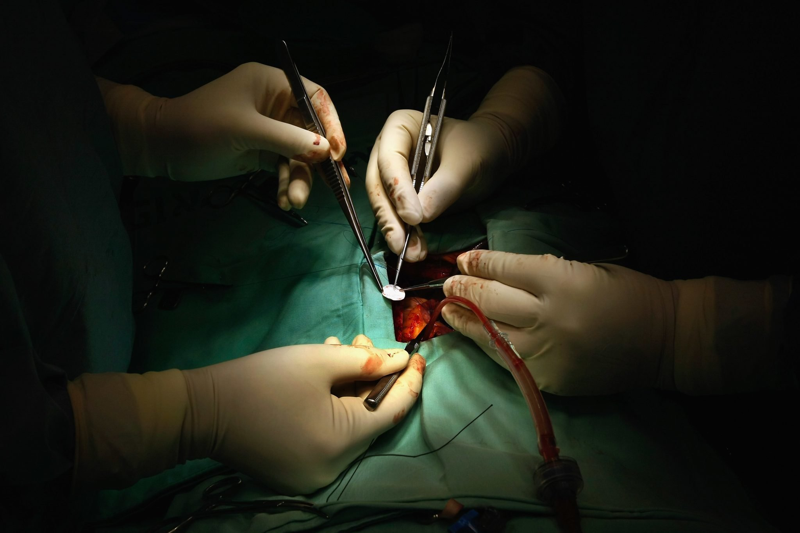
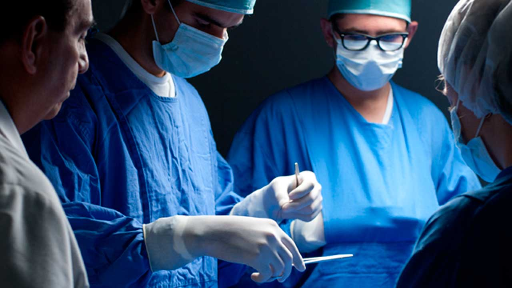
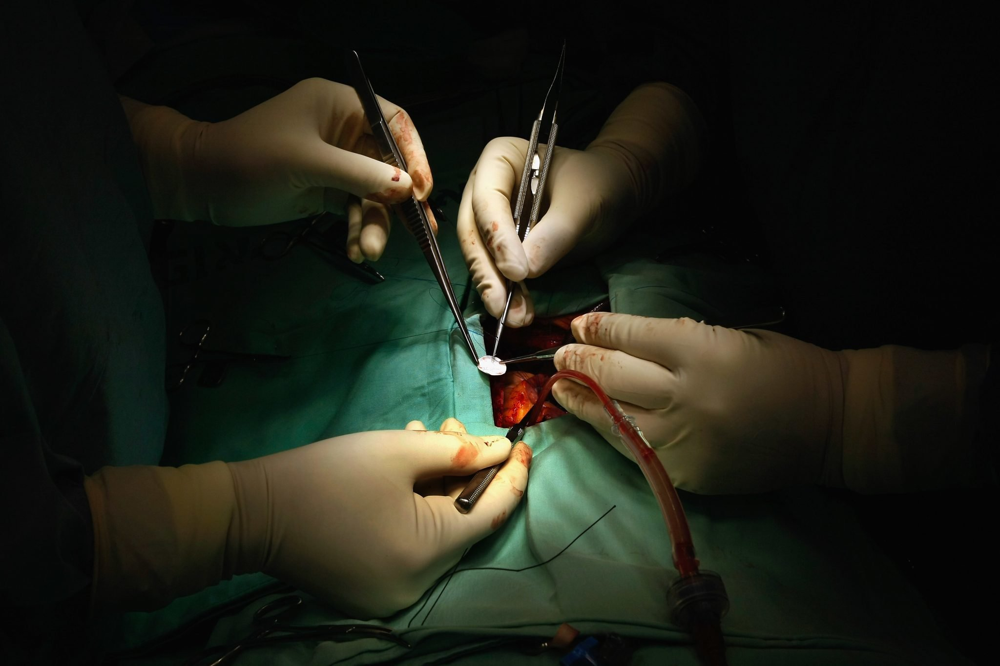
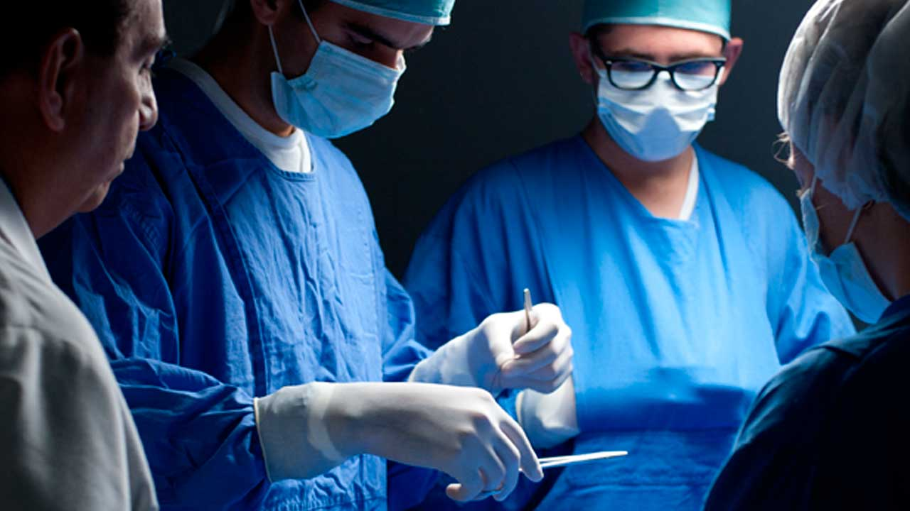

Las lesiones deportivas son muy comunes en deportistas amateur que no siguen un entrenamiento adecuado. Entre las más frecuentes encontramos esguinces de tobillo, tendinitis rotuliana y desgarros musculares...
Estas lesiones suelen ocurrir por falta de calentamiento adecuado, técnica incorrecta o sobreesfuerzo. Es fundamental realizar un calentamiento progresivo antes de cualquier actividad física intensa, así como fortalecer la musculatura que protege las articulaciones más vulnerables.
Consultar con un especialista ante los primeros síntomas puede prevenir lesiones crónicas y acortar significativamente el tiempo de recuperación.
Artroscopía
Ventajas de la cirugía artroscópica
3 de Mayo, 2023
La artroscopía es una técnica quirúrgica mínimamente invasiva que permite diagnosticar y tratar problemas articulares con mayor precisión y menor tiempo de recuperación...
Entre sus principales ventajas destacan: incisiones más pequeñas, menor dolor postoperatorio, menor riesgo de infección y recuperación más rápida. Esta técnica es especialmente útil para tratar lesiones de menisco, ligamentos cruzados y problemas de cartílago articular.
Los pacientes suelen experimentar una mejora significativa en su movilidad y calidad de vida tras este tipo de intervenciones.
Prevención
Ejercicios para prevenir dolor de rodilla
20 de Abril, 2023
El dolor de rodilla afecta a personas de todas las edades y puede prevenirse con ejercicios específicos que fortalecen los músculos estabilizadores de la articulación...
Los ejercicios más recomendados incluyen sentadillas controladas, extensiones de pierna, elevaciones laterales y ejercicios de equilibrio. Es importante realizarlos con técnica correcta y de forma progresiva para evitar sobrecargas.
Complementar estos ejercicios con estiramientos adecuados y mantener un peso saludable son factores clave para la salud de las rodillas a largo plazo.
Traumatología General
Mitos y realidades sobre la artrosis
8 de Marzo, 2023
Existen numerosos mitos sobre la artrosis que pueden llevar a decisiones incorrectas en su tratamiento. Es importante conocer la información basada en evidencia científica...
Contrario a la creencia popular, la artrosis no es simplemente una consecuencia inevitable del envejecimiento. Factores como la genética, lesiones previas, obesidad y actividades repetitivas juegan un papel fundamental en su desarrollo.
Asimismo, el ejercicio moderado no empeora la artrosis, sino que puede ayudar a fortalecer las articulaciones y reducir el dolor cuando se realiza de manera adecuada.
Rehabilitación
Recuperación tras prótesis de cadera
15 de Febrero, 2023
La cirugía de reemplazo de cadera es uno de los procedimientos más exitosos en traumatología. El proceso de rehabilitación es fundamental para obtener resultados óptimos...
La rehabilitación suele comenzar el mismo día de la cirugía con ejercicios simples de movilización. Progresivamente, se incorporan ejercicios de fortalecimiento y equilibrio bajo supervisión profesional.
La mayoría de los pacientes pueden retomar sus actividades cotidianas entre 6 y 12 semanas después de la intervención, aunque la recuperación completa puede llevar hasta 6 meses.
Traumatología Deportiva
Tratamiento de lesiones de ligamento cruzado
5 de Enero, 2023
La rotura del ligamento cruzado anterior (LCA) es una de las lesiones más temidas por los deportistas. Las opciones de tratamiento han evolucionado significativamente en los últimos años...
El tratamiento puede ser conservador o quirúrgico, dependiendo de factores como la edad del paciente, nivel de actividad física y grado de inestabilidad de la rodilla. La reconstrucción artroscópica del LCA ofrece excelentes resultados en pacientes activos.
La rehabilitación postoperatoria es tan importante como la cirugía misma, y suele durar entre 6 y 9 meses para lograr un retorno seguro a la actividad deportiva.
Prevención
Cuidados de la columna en el trabajo
10 de Diciembre, 2022
Los problemas de columna relacionados con el trabajo son una causa frecuente de consulta traumatológica. La ergonomía y los hábitos posturales correctos son fundamentales para prevenirlos...
Mantener una postura adecuada, realizar pausas activas cada hora, ajustar correctamente la altura de la silla y monitor, y utilizar soportes lumbares cuando sea necesario son medidas efectivas para prevenir el dolor de espalda.
Complementar estas medidas con ejercicios de fortalecimiento del core y estiramientos regulares puede reducir significativamente el riesgo de lesiones crónicas.
Artroscopía
Artroscopía de hombro: indicaciones y resultados
25 de Noviembre, 2022
La artroscopía de hombro permite tratar diversas patologías como lesiones del manguito rotador, inestabilidad glenohumeral y lesiones del labrum con mínima invasión...
Esta técnica ofrece ventajas significativas frente a la cirugía abierta tradicional, como menor dolor postoperatorio, menor riesgo de rigidez y cicatrices más pequeñas. Los resultados suelen ser excelentes en pacientes bien seleccionados.
La rehabilitación postoperatoria es fundamental y debe ser personalizada según el tipo de lesión tratada y las características individuales del paciente.
Rehabilitación
Importancia de la fisioterapia en traumatología
5 de Noviembre, 2022
La fisioterapia es un componente esencial en el tratamiento integral de las lesiones traumatológicas. Su papel va mucho más allá de la simple recuperación de movilidad...
Un programa de fisioterapia bien diseñado puede acelerar la recuperación, reducir el dolor, prevenir complicaciones y mejorar la funcionalidad a largo plazo. La combinación de técnicas manuales, ejercicios terapéuticos y agentes físicos permite abordar cada caso de manera personalizada.
La colaboración estrecha entre traumatólogo y fisioterapeuta es clave para optimizar los resultados del tratamiento y garantizar una recuperación completa.
 


